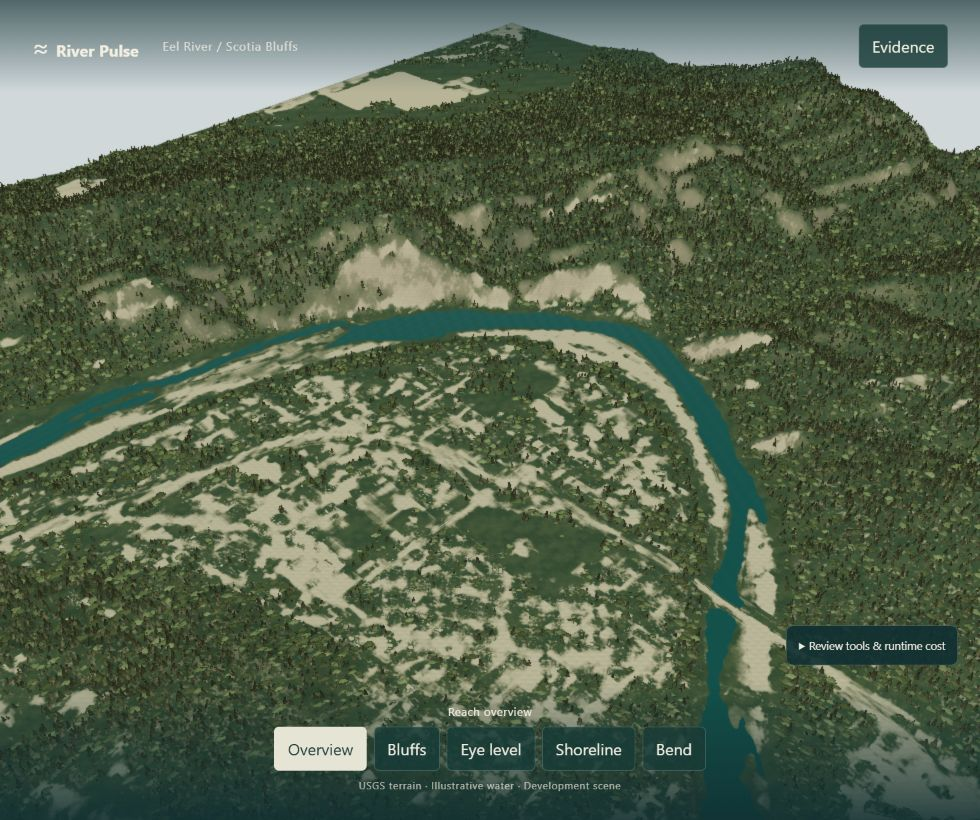
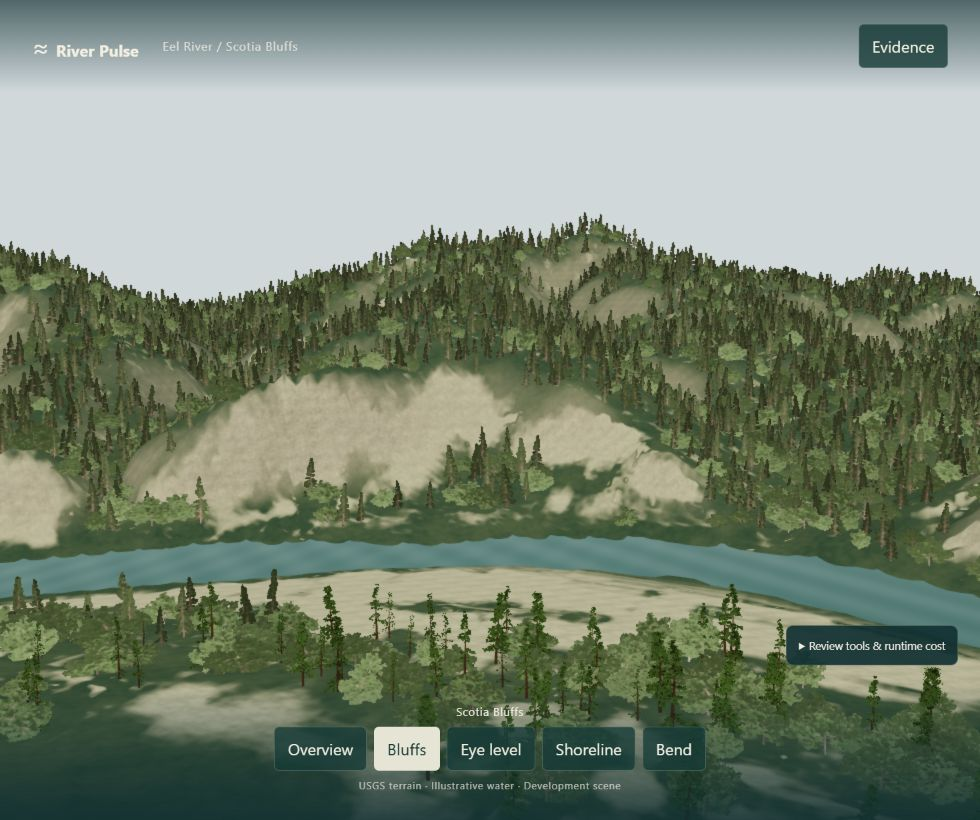
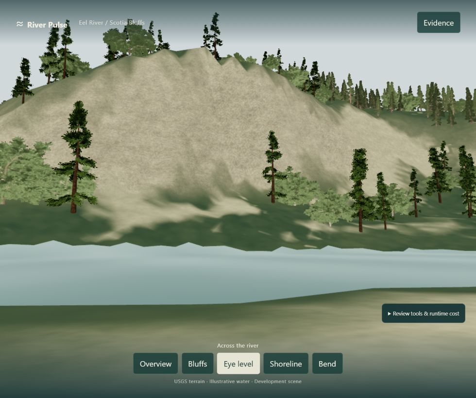
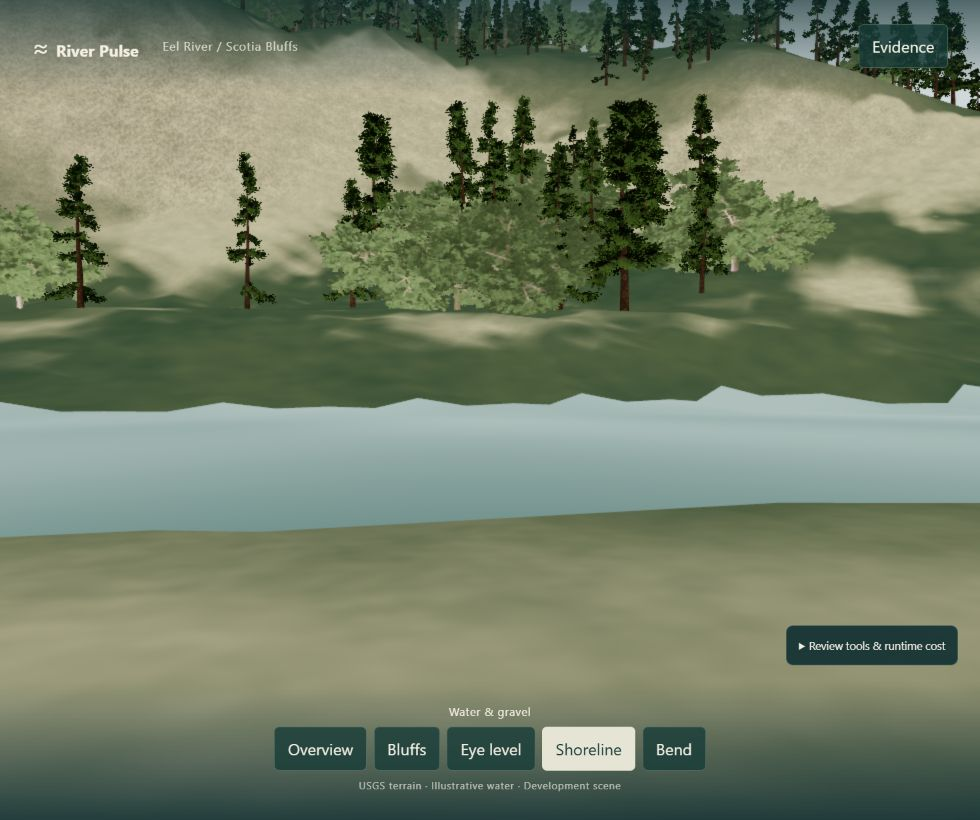
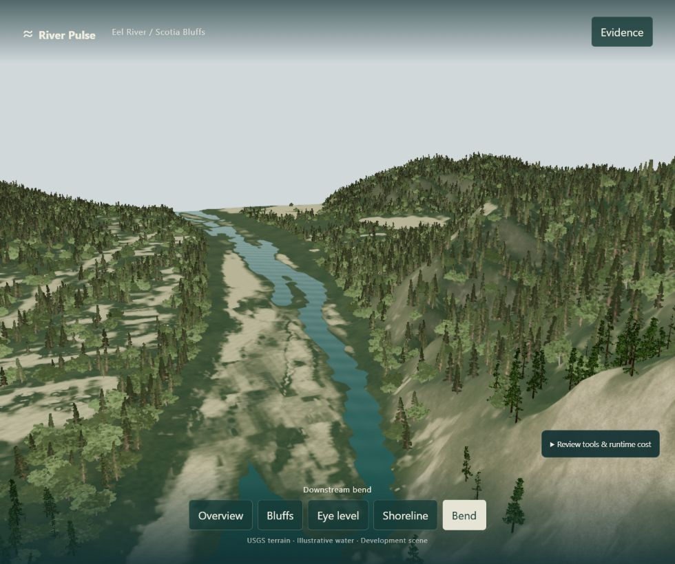

Overview
Reach and bluff silhouette
Capture not present yet: RP20 overview before image.

RP24 overview capture is pending.
A restrained authored rock-photo layer adds close surface variation to the exposed bluff slopes. Compare the RP20 scene with the RP24 material pass from the same fixed cameras.





Only the authored dry-land surface material changed. Terrain elevations, fixed cameras, forest placement, water geometry and water appearance remain those of the RP20 scene. The surface texture is a display asset, not mapped geology.
Coarse bluff form remains limited by the existing terrain grid; some trees still read as procedural; the close water and shoreline contact remain weak. This comparison records a pass for review, not acceptance.